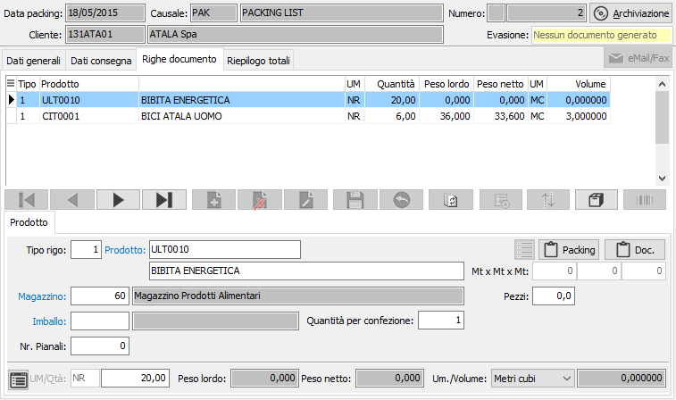
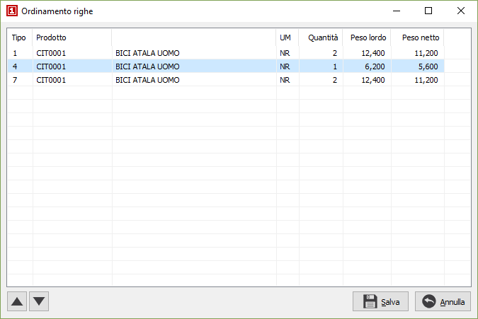
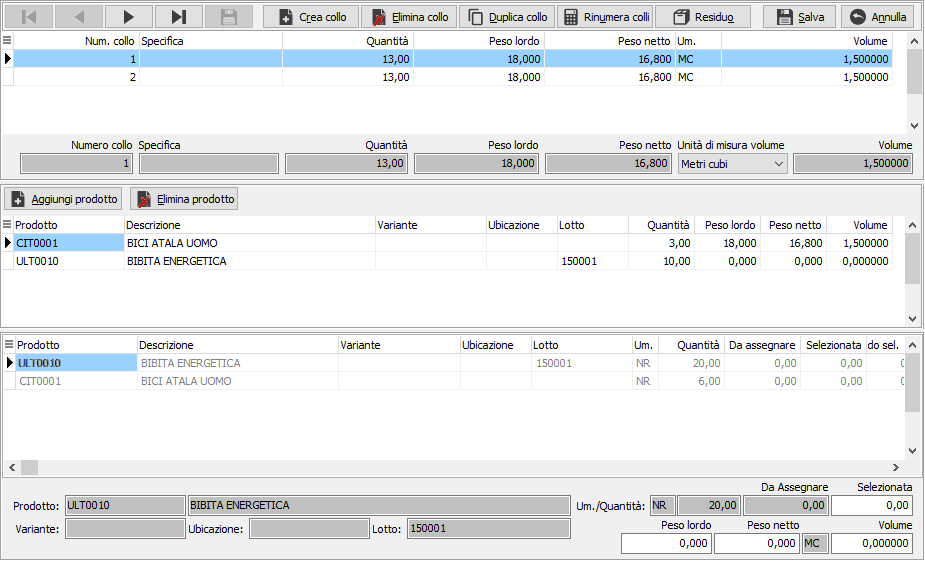
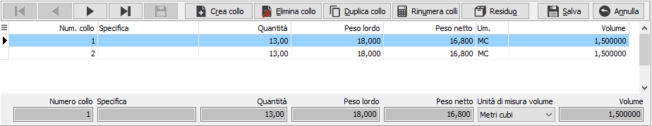
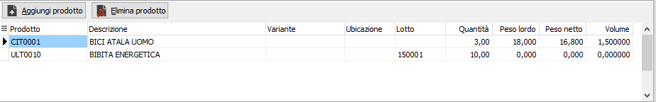
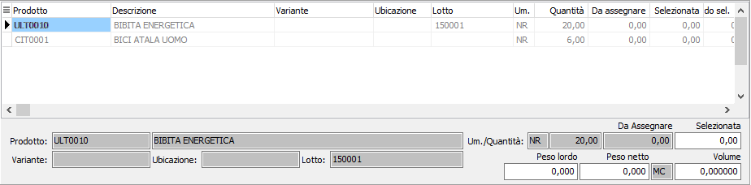
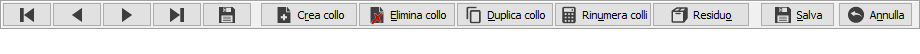
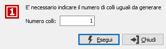
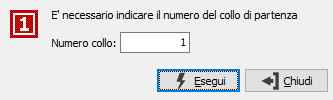
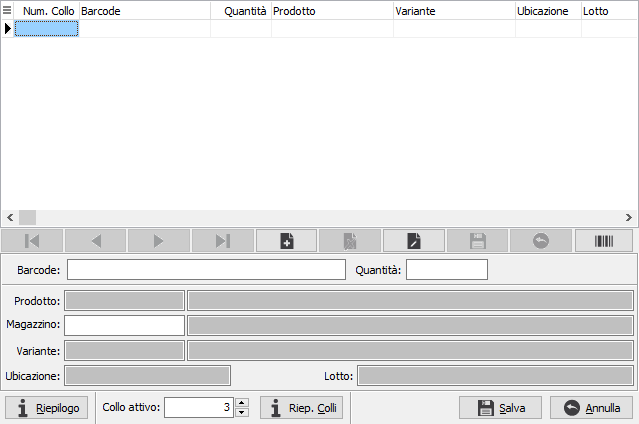

Se attiva la gestione matricole sarà possibile accedere dal singolo rigo/dettaglio alla finestra delle matricole tramite il pulsante sul rigo o tramite il pulsante Matricole in alto con cui si accede alla finestra di gestione massiva.
Righe documento (gestione per collo)
La gestione per collo è attiva se spuntato il campo di configurazione "Gestione packing list per collo"
In questa finestra video è possibile inserire le varie righe del packing list. È possibile inserire righe relativi ad articoli codificati, ad articoli non presenti in magazzino, ad omaggi di varia natura e descrittivi. Non tutti i campi visualizzati nell'illustrazione seguente sono necessariamente presenti nell'installazione attiva presso l'utente.
La maschera video è articolata su due sezioni: la sezione inferiore visualizza il pannello di input, la griglia della sezione superiore visualizza le righe inserite.

TIPO RIGO: codice numerico presente sulla tabella dei tipi rigo utilizzato per definire il tipo di rigo che si vuole inserire. Se il packing evade gli ordini è possibile richiamare la finestra di selezione degli ordini tramite il tasto F12. Se il packing deve essere generato dai documenti di trasporto è possibile richiamare la finestra di selezione dei Ddt tramite il tasto F11. Se il packing deve essere generato dalle fatture è possibile richiamare la finestra di selezione delle fatture tramite il tasto CTRL+F11. Sul campo sono attive le funzioni di ricerca (F9).
PRODOTTO: campo alfanumerico per inserire il codice dell'articolo che si intende utilizzare. Il campo è attivo solo per i tipi di rigo che prevedono l'accesso al prodotto. Sul campo sono attive le funzioni di ricerca (F9) ed accesso rapido alla tabella (CTRL+W).
DESCRIZIONE: campo alfanumerico di 60 caratteri per descrivere il prodotto. In caso di articoli codificati, il campo viene compilato automaticamente con la descrizione dell'articolo in esame, che è tuttavia modificabile a cura dell'utente. Nel caso di tipo rigo che identifichi righe descrittive, sul campo è attiva la ricerca sulla tabella dei Testi fissi documenti, che consente di acquisire testi precedentemente inseriti ed assegnati ad un codice.
NOTE PACKING: bottone che abilita un campo annotazioni, relative al rigo di documento attivo, che verranno stampate sul documento. Prima di confermare, è possibile richiedere la duplicazione del testo nelle note documenti, apponendo l'apposita spunta. Nel caso la causale lo preveda (casella stampa descrizione estesa con segno di spunta) ed il prodotto abbia una descrizione estesa dichiarata non fissa (casella fissa in anagrafica articoli non spuntata), questa viene automaticamente riportata in questo campo.
NOTE DOC.: bottone che abilita il campo annotazioni, relative al rigo di documento attivo, che verranno riportate e stampate sul documento derivante dal packing list, sia esso Ddt o fattura.
LUNGHEZZA: campo visualizzato solo se in configurazione è attiva la gestione delle misure. Consente di impostare la prima misura (lunghezza) per il calcolo della quantità.
LARGHEZZA: campo visualizzato solo se in configurazione è attiva la gestione delle misure. Consente di impostare la seconda misura (larghezza) per il calcolo della quantità.
ALTEZZA: campo visualizzato solo se in configurazione è attiva la gestione delle misure. Consente di impostare la terza misura (altezza) per il calcolo della quantità.
MAGAZZINO: codice del magazzino aziendale da cui deve essere inviata la merce per l'evasione del packing. Viene proposto il magazzino presente in configurazione. Sul campo sono attive le funzioni di ricerca (F9) ed accesso rapido alla tabella (CTRL+W).
IMBALLO: codice alfanumerico di 3 caratteri, presente nella tabella Imballi, per descrivere l'imballo del prodotto ed acquisire il valore dell'eventuale peso dell'imballo.
quantità per confezione: è la quantità per imballo letta dall'anagrafica articoli, viene utilizzata per il calcolo dei pesi.
NR. PIANALI: Campo numerico che indica il numero dei pianali assegnati agli imballi.
UNITÀ DI MISURA: campo alfanumerico di 3 caratteri, presente nella tabella Unità di misura, per descrivere l'unità di misura del prodotto. Per gli articoli codificati viene presentata automaticamente la prima unità di misura presente in anagrafica. L'unità di misura può essere modificata dall'utente, ma per gli articoli codificati vengono accettati solo i codici delle unità di misura presenti in anagrafica articolo. Se viene specificata la seconda o la terza unità di misura presente in anagrafica articoli, l'impegnato clienti viene calcolato in funzione del fattore di conversione relativo. Sul campo sono attive le funzioni di ricerca (F9) ed accesso rapido alla tabella (CTRL+W). Tramite il tasto funzione F11 si può accedere alla finestra relativa al fattore di conversione.
QUANTITÀ: campo numerico per inserire la quantità per l'articolo attivo. Se attiva la gestione del dettaglio quantità per questo documento, è presente il bottone dettaglio, a sinistra del campo, tramite il quale sarà visualizzata la relativa finestra di dettaglio quantità; l'attivazione della finestra avviene comunque in automatico al momento dell'accesso al campo quantità.
I pesi ed il volume presenti sull'ultima riga del pannello non sono modificabili dall'utente, essendo determinati automaticamente dal dettaglio colli.
Nella finestra video è possibile scorrere le righe di documento, visualizzando quello attivo nel pannello di input, tramite i tasti CTRL+freccia giù e CTRL+freccia su. Un rigo di documento visualizzato nel pannello di input può essere eliminato, ancorchè privo di trattamenti successivi, premendo il bottone Elimina della barra strumenti del pannello di input; è possibile inserire un rigo vuoto immediatamente successivo al rigo attivo premendo il bottone Nuovo della barra strumenti del pannello di input.
Tramite il pulsante Ordina è possibile modificare l'ordinamento delle righe del documento spostandole singolarmente tramite gli appositi tasti di scorrimento oppure selezionando e trascinando le singole righe. La pressione sul pulsante Salva determina la modifica effettiva dell'ordinamento.

Tramite il pulsante Barcode, se presente ad attivo il relativo modulo è possibile inserire nel documento dati provenienti da lettori ottici.
|
Se attiva la gestione matricole sarà possibile accedere dal singolo rigo/dettaglio alla finestra delle matricole tramite il pulsante sul rigo o tramite il pulsante Matricole in alto con cui si accede alla finestra di gestione massiva. |
Una volta inseriti i prodotti sul documento con le quantità si procede ad assegnare i colli, tramite il pulsante mostrato a lato; non è possibile salvare il documento se le quantità risultanti dalle righe documento differisce dalla quantità inserita sui colli. Sul rigo del packing vengono calcolati i pesi dall'anagrafica dell'articolo, oppure in fase di evasione di un documento, se attivata la gestione dei pesi modificabili, vengono calcolati in base al peso indicato sul documento che stiamo evadendo.

La maschera della gestione dei colli è composta da tre sezioni, la prima contiene i dati del collo quali il numero, la specifica e la quantità con relativi pesi.

La seconda sezione contiene i dati dei prodotti associati al collo sul quale siamo posizionati nella prima sezione, con le quantità del prodotto e dei pesi associate a tale collo.

La terza sezione contiene i prodotti, con i singoli dettagli, presenti sul packing con le quantità totali del rigo o del dettaglio (colonna "Quantità") e le quantità residue ancora da assegnare (colonna "Da assegnare"), in questa sezione viene effettuata l'assegnazione delle quantità dei prodotti ai colli in fase di inserimento del collo.

Nella parte alta della finestra è presente la barra dei pulsanti da cui è possibile effettuare tutte le operazioni necessarie alla gestione dei colli.

I pulsanti di direzione consentono di spostarsi all'inizio, in avanti, indietro ed alla fine dei singoli colli, il pulsante Salva consente di salvare il collo attualmente in uso. |
|
"Crea collo" consente di inserire nuovi colli, il collo viene generato automaticamente con il primo numero disponibile. Il numero generato può essere modificato ed è possibile inserire una descrizione specifica per il collo, non è possibile inserire più colli con lo stesso numero/specifica. In fase di inserimento di un collo è necessario indicare le quantità e i pesi dei prodotti da assegnare al collo, tale assegnazione può essere effettuata, nella terza sezione della finestra, tramite il doppio click del mouse (tutta la quantità del rigo viene assegnata al collo), tramite il menù richiamabile con tasto destro del mouse o inserendo manualmente la quantità sul campo "Selezionata". I pesi vengono proposti in proporzione in base alla quantità assegnata, partendo dal peso del rigo, sia i pesi che il volume possono essere modificati per il singolo collo e sul rigo del documento, i pesi verranno aggiornati con quelli presenti sui colli. |
|
"Elimina collo" si attiva dopo aver inserito un collo e permette di cancellare il collo e rendere le quantità che erano associate al collo libere per essere assegnate ad altri colli. |
|
 "Duplica collo" si attiva dopo aver inserito un collo e permette di duplicare il collo su cui siamo posizionati, selezionando tale funzione viene richiesto il numero di colli da generare. La duplicazione può avvenire solo se le quantità residue delle righe siano sufficienti alla creazione del nuovo collo. |
|
 "Rinumera colli" si attiva dopo aver inserito un collo e permette di rinumerare i colli partendo da quello su cui siamo posizionati, viene richiesto a video il numero del collo di partenza. Non sarà possibile rinumerare i colli con numerazioni già presenti. |
|
"Residuo" permette di creare automaticamente un collo con le quantità residue che risultano da assegnare. |
|
"Aggiungi prodotto" consente di aggiungere altri prodotti o ulteriori quantità di prodotti ad un collo già creato, se disponibili prodotti ancora da assegnare; l'assegnazione ha le stesse modalità della creazione di un collo nuovo. |
|
|
"Elimina prodotto" consente di eliminare dal collo il prodotto/dettaglio su cui siamo posizionati nella seconda sezione della finestra; l'eliminazione rende disponibile il prodotto/dettaglio per nuove assegnazioni. |
Alla pressione del tasto funzione di salvataggio viene richiesta la conferma e salvando il packing viene effettuata l'assegnazione dei colli ai pallets. Per poter salvare i colli è necessario che le quantità dei prodotti del documento risultino completamente assegnate ai colli. |
|
Il tasto annulla consente di uscire dalla finestra senza salvare le modifiche apportate. |
Nel caso di inserimento dei prodotti da barcode, richiamabile tramite il pulsante barcode, se attivo il flag "Utilizza ricerca con tipi barcode" nella configurazione del modulo "Gestione POS" è possibile creare automaticamente i colli con i prodotti importati da barcode; viene aperta la seguente finestra:

La gestione è analoga a quella dei dati provenienti da lettori ottici con la particolarità che i dati importati vengono automaticamente assegnati al collo attivo indicato a video, su tale campo viene proposto il primo numero di collo libero ed è modificabile, ovviamente deve essere impostato al corretto valore prima di leggere il barcode o di premere il pulsante Barcode per l'importazione massiva. Nel caso in cui questo valore venga impostato a 0, i prodotti vengono importati senza nessun collo assegnato e sarà necessario assegnare i colli manualmente come descritto sopra.
E' presente anche il pulsante "Riepilogo Colli" dove viene visualizzato un riepilogo degli articoli ordinati per numero collo.